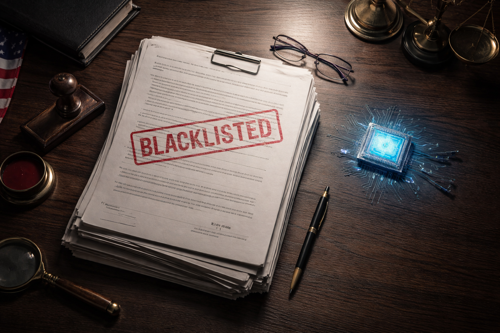

Last Friday, the President of the United States posted on Truth Social that every federal agency must "IMMEDIATELY CEASE all use of Anthropic's technology." Hours later, the Secretary of War designated the company a supply-chain risk to national security, a label historically reserved for foreign adversaries like Huawei.
The reason? Anthropic refused to remove two safety guardrails from its AI models: no mass domestic surveillance of Americans, and no fully autonomous weapons without a human in the loop.
If you work in technology, this should stop you in your tracks. Not because of the politics. Because of what it means for the entire AI industry and every company that depends on it.
What Actually Happened
Here's the short version. The Pentagon gave Anthropic a deadline: agree to let Claude be used "for all lawful purposes" with no company-imposed restrictions, or face consequences. Anthropic's CEO responded publicly: "We can't in good conscience accede to their request."
The deadline passed. The ban dropped. And then, in a move nobody saw coming, OpenAI announced its own Pentagon deal within hours, with essentially the same red lines Anthropic was fighting for. No mass surveillance. Human responsibility for use of force. Cloud-only deployment with monitoring personnel on-site.
The Pentagon accepted from one company what it rejected from another. Same substance, different packaging.
Meanwhile, 573 Google employees and 93 OpenAI employees signed an open letter called "We Will Not Be Divided," urging AI companies not to cave to the pressure. Anthropic is suing. Claude shot to number two on the App Store. Katy Perry posted a screenshot of her Claude Pro subscription with a heart drawn on it. And every enterprise buyer with government exposure is now staring at their AI vendor stack wondering what just happened.
The Ripple Effect Nobody Is Talking About
The supply-chain risk designation doesn't just affect the Pentagon's direct contract with Anthropic. Under the broadest interpretation, no contractor, supplier, or partner doing business with the US military may conduct any commercial activity with Anthropic. Read that again.
Think about how many Fortune 500 companies have some DoD exposure. Defense contractors, obviously. But also cloud providers, consulting firms, telecom companies, logistics operators, healthcare systems serving veterans. The ripple effect is enormous.
Now consider that dozens of major enterprise platforms just announced deep Claude integrations the same week - Slack, Docusign, Intuit, Gmail etc. If you're a company running any of these AI-powered integrations and you also have DoD contracts, what do you do Monday morning?
This is the kind of question that used to live in export compliance departments and never touched daily business decisions. Now it's front and center for any organization that touches government.
What This Means for the AI Industry
This situation sets several precedents that will reshape how companies think about AI.
"Which AI model powers your product?" is the new compliance question. Procurement teams in regulated industries are going to start asking which AI models are embedded in the products they buy, the same way they ask about data residency and SOC 2 compliance. If a product uses Claude under the hood, companies with government exposure need a clear answer. If a platform is model-agnostic, that just became its biggest differentiator.
Vendor risk assessments now include AI model governance. The old checklist was uptime, security, data handling, GDPR compliance. The new checklist adds: what restrictions does your AI vendor impose? What happens if those restrictions conflict with your use case? What happens if the government decides those restrictions are unacceptable? Nobody had "your AI vendor gets blacklisted by the federal government" on their risk register.
Single-vendor AI strategies are dead. Any enterprise running a single AI provider is now carrying concentration risk they didn't have two weeks ago. The value proposition in enterprise AI is no longer "our model is the best." It's "our platform runs on multiple models and you can switch without disruption." Single-provider lock-in went from inconvenient to genuinely dangerous.
Safety policies are now procurement liabilities. Every AI company that publishes responsible use policies now has to consider the possibility that those policies could be used against them by a government customer. The chilling effect on the industry is real and immediate.
The Deeper Issue
What makes this story genuinely unprecedented isn't the ban itself. It's that the government used a national security designation against an American company for maintaining safety policies. Whether you agree with those policies or not, the precedent is what matters.
This designation has historically been reserved for foreign adversaries. It's never been publicly applied to an American company. Legal experts have already called the broad interpretation "almost surely illegal" and "attempted corporate murder." Anthropic is challenging it in court.
But the legal fight will play out over years. Enterprise buyers don't wait for court rulings. They make decisions based on perceived risk. And right now, the perceived risk of being caught in the crossfire between an AI company and the federal government is enough to change purchasing decisions today.
The Uncomfortable Truth
The part nobody wants to say out loud: OpenAI got the same deal with the same guardrails, just framed differently. Contractual terms and technical safeguards instead of blanket moral prohibitions. Same substance, different salesmanship.
How you frame your position matters as much as the position itself. Anthropic drew a moral line. OpenAI drew a contractual one. The Pentagon bought the second version.
There's a lesson in there about how principles interact with power. You can be right on the substance and still lose the battle if you can't translate your position into language the other side is willing to accept. Anthropic held firm on principle. OpenAI found a way to get the same protections written into a contract the Pentagon could sign. The outcome was identical for both companies, except one got blacklisted and the other got the deal.
I'm not saying Anthropic was wrong to take a stand. I think what they did took real courage, and the 660+ employees from competing companies who publicly supported them clearly agree. But the outcome is a case study in how principled positions and pragmatic execution don't always point in the same direction.
What I'm Watching
Three things will determine how this plays out for the industry:
The legal challenge. If the supply-chain designation gets struck down, this becomes a cautionary tale about government overreach. If it stands, every AI company will quietly soften their safety policies before the next contract negotiation.
Enterprise reaction. Are Fortune 500 companies with government exposure actually dropping Claude? Or are they waiting it out? The next two quarters of earnings calls will tell us.
The multi-model acceleration. I expect every major enterprise AI platform to fast-track multi-model support. The companies that already offer model flexibility will win business they wouldn't have won three weeks ago. The ones locked to a single provider will scramble.
AI vendor governance is now a business risk dimension, right alongside security, compliance, and data sovereignty. Every company that uses AI in its operations, which at this point is most of them, needs to think about what happens when the ground shifts under their AI provider.
And right now, the question nobody has on their vendor assessment, but everyone should, is: What happens when your AI vendor takes a position the government doesn't like?